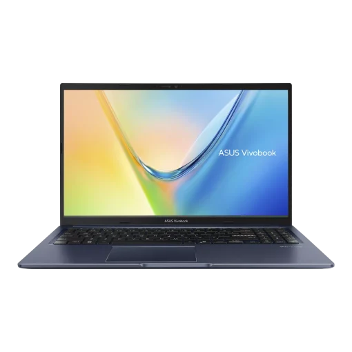

1TB אחסוןASUS Vivobook 15
AMD Ryzen 7 170 · 1TB
מחשב נייד חזק במיוחד לטווח המחיר: מעבד Ryzen 7 עם 8 ליבות מלאות, אחסון ענק של 1TB ו-16GB זיכרון DDR5, במסך IPS בגודל 15.6 אינץ'.
💾
אחסון ענק
1TB SSD
פי 2 מ-512GB שמגיעים ברוב הניידים בטווח המחיר: מקום לשנים של תמונות, סרטונים ומסמכים.
⚡
מעבד Ryzen 7
8 ליבות מלאות
AMD Ryzen 7 170: 16 תהליכונים, עד 4.75GHz, הספק 45W. חזק משמעותית מ-i5 רגיל לניידים.
- 🎮גרפיקה משולבת חזקהAMD Radeon 680M עם 12 ליבות גרפיות
- ⌨️מקלדת מוארתנוח לעבודה גם בתאורה חלשה
- 🖥מסך 15.6 אינץ' FHD IPSצבעים וזוויות צפייה טובים
- 🛡עמידות צבאיתעבר בדיקות MIL-STD-810H
Ryzen 7 170 מול i5 רגיל לניידים
השוואה ל-Intel Core i5-1334U, מעבד i5 נפוץ בניידים בטווח המחיר הזה. הנתונים לפי אתרי היצרנים (AMD ו-Intel).
| AMD Ryzen 7 170במחשב הזה | Intel Core i5-1334Ui5 רגיל לניידים | |
|---|---|---|
| ליבות | 8 ליבות, כולן ליבות ביצועים מלאות | 10 ליבות, מתוכן רק 2 ליבות ביצועים (והשאר ליבות חסכוניות) |
| תהליכונים | 16 | 12 |
| תדר מרבי | עד 4.75GHz | עד 4.6GHz |
| זיכרון מטמון | 16MB | 12MB |
| הספק בסיס | 45W: מעבד ביצועים | 15W: מעבד חסכוני |
| גרפיקה משולבת | Radeon 680M (12 ליבות גרפיות) | Intel Iris Xe / UHD |
מקורות: דפי המפרט הרשמיים של AMD Ryzen 7 170 ושל Intel Core i5-1334U. ביצועים בפועל תלויים בתצורה, בקירור ובסוג העומס.
מפרט
| מעבד | AMD Ryzen 7 170 (Zen 3+): 8 ליבות / 16 תהליכונים, בסיס 3.2GHz, עד 4.75GHz, מטמון L3 16MB, הספק 45W |
|---|---|
| גרפיקה | AMD Radeon 680M משולב (12 ליבות גרפיות) |
| זיכרון | 16GB DDR5 |
| אחסון | 1TB SSD NVMe |
| מסך | 15.6 אינץ' FHD (1920×1080) IPS |
|---|---|
| מקלדת | מוארת |
| עמידות | MIL-STD-810H |
| צבע | Quiet Blue (כחול כהה) |
| מערכת הפעלה | מגיע מהיצרן ללא מערכת הפעלה. אצלנו: כולל התקנות מלאות |
| אחריות | שנה |
| דגם | ASUS Vivobook 15 M1502NAQ, מק"ט 6296 |
המפרט עשוי להשתנות. התמונות להמחשה בלבד.